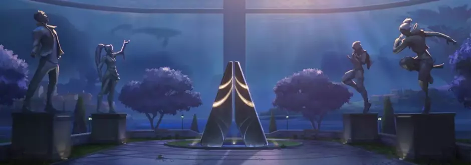

Acerca de nosotros
El Protocolo VALORANT es completamente independiente, aunque requieren un patrocinador para financiar su tecnología. Su existencia se mantiene oculta para el resto del mundo, y el Protocolo se asegura de eliminar cualquier rastro de los medios.
Nuestros comienzos
Nuestra historia se desarrolla en un futuro cercano en la Tierra, transformada por un fenómeno misterioso conocido como "Primera Luz" (First Light). Este evento cambió la vida, la tecnología y la sociedad al introducir una sustancia llamada Radiantita. Algunas personas, conocidas como Radiantes, adquirieron poderes extraordinarios a raíz de este suceso. Para proteger a la humanidad de diversas amenazas, se creó el Protocolo Valorant, que reúne a estos Radiantes y agentes altamente calificados. Gran parte de la narrativa del juego gira en torno al conflicto entre la Tierra Alfa y la Tierra Omega, dos dimensiones paralelas. Los agentes del Protocolo Valorant trabajan para prevenir desastres, a menudo relacionados con la tecnología impulsada por Radiantita. Cada agente tiene una historia única, con motivaciones y habilidades que enriquecen el universo del juego. Riot Games sigue ampliando el lore a través de eventos dentro del juego, cinemáticas y actualizaciones.